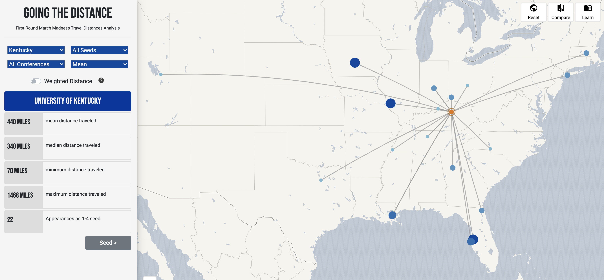
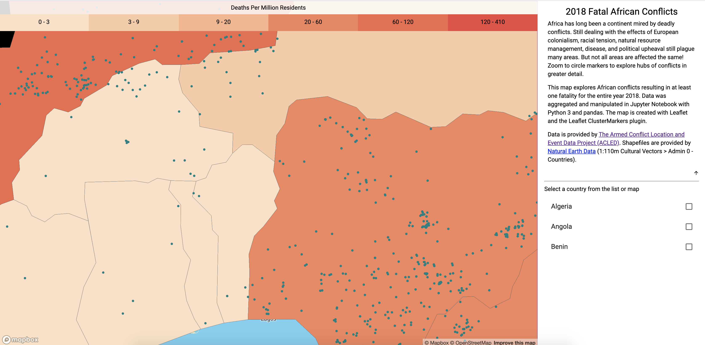
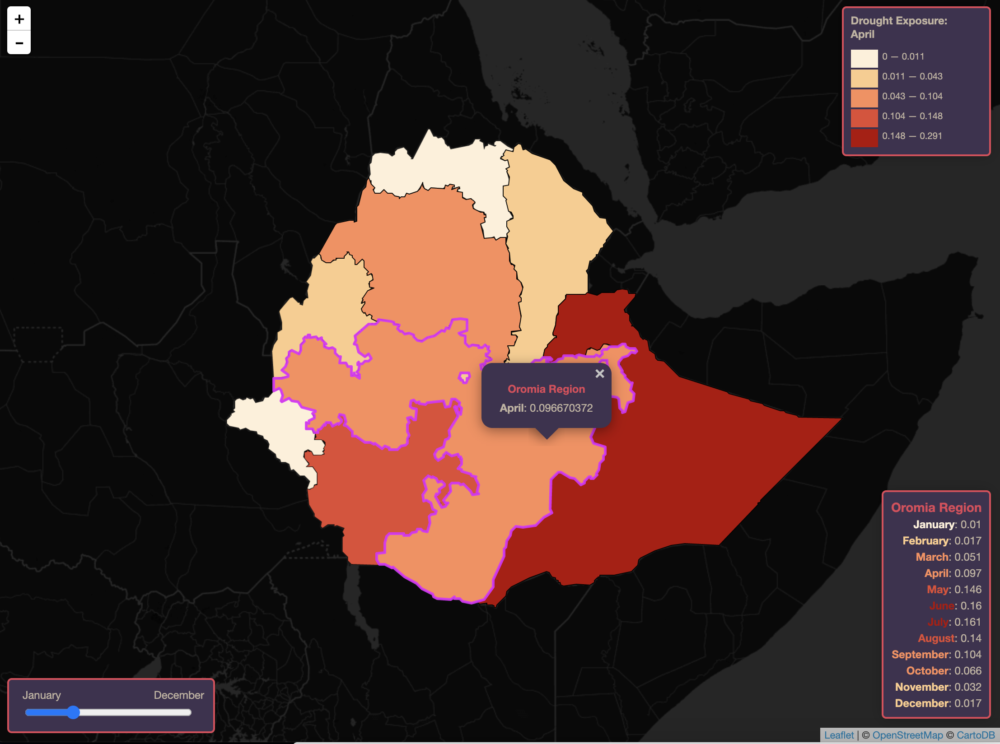
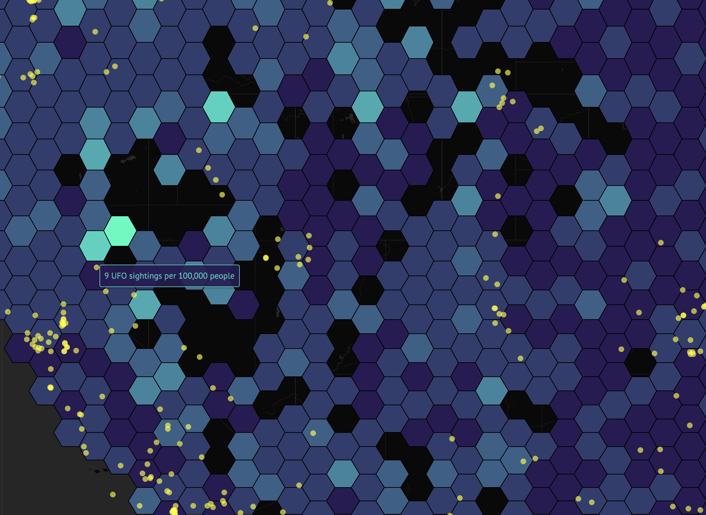
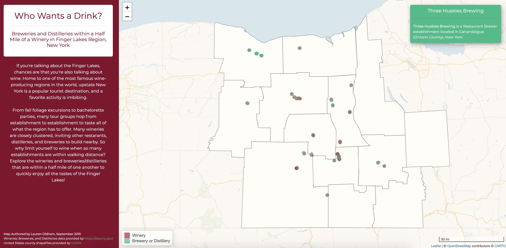

Going the Distance
Men's College Basketball Travel Distance Analysis

Colonizability of Africa
Analysis of Digitized Map from 1899

African Conflict
Data Visualization of Conflicts in 2018

Ethiopia Crop Calendar Index
Drought Exposure Tool in Ethiopia

We Come in Peace!
US UFO Sightings and Military Installations

Who Wants a Drink?
Finger Lakes Winery and Brewery Analysis